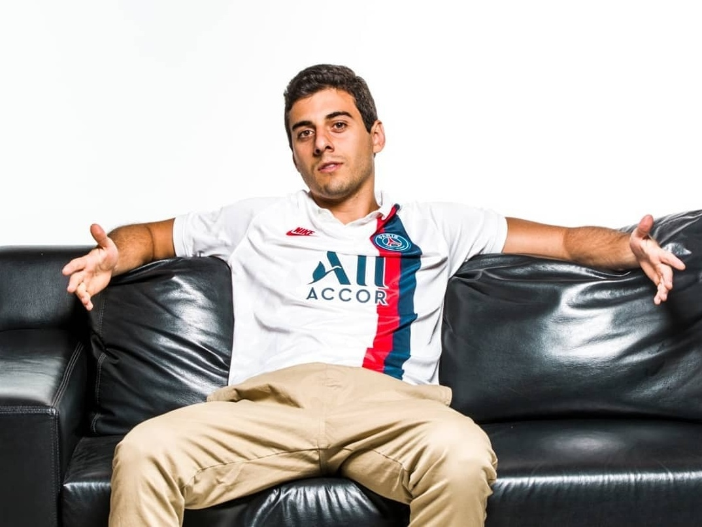

Fabio Brazza
cantor e compositor da cena do rap nacional que destaca o poder da palavra e da música em suas canções!@ajlkn / HTML5 UP
Brazza e a música como força de reflexão
músico, poeta e escritor. Nascido em São Paulo, em 1990, Fabio tomou gosto pela música e pela leitura desde cedo, com 7 anos ele já lia livros de Dom Casmurro, a paixão pela música veio por influência de seu avô, Ronaldo Azeredo, também poeta. Brazza é conhecido no mundo do RAP por usar sua inteligência, seu vocabulário e por trazer muito conteúdo em sua letras. Já fez 3 livros, “O Anel de Giges” e “Pensamento Inverso” (ambos infantis), e Mais que Futebol: Poesia. Fabio Brazza tem o sonho de fazer uma música com Mano Brown que o inspirou e motivou muito em sua carreira. Além de rapper Fabio também tem alguns sambas gravados e nesse gênero sonha em gravar com Zeca Pagodinho. Ele já foi entrevistado no “The Noite” com Danilo Gentili, “Altas Horas” com Serginho Groisman e com Ronnie Von no “Todo Seu”. Já gravou canções com Caju e Castanha, Negra Li, Péricles e outros.
Discos
Com oito álbuns lançados, pode ser considerado um artista completo
2014 -Filho da Pátria
2016 - Tupi Or Not Tupi
2017 - É Ritmo, Mas Também é Poesia
2017-no Estúdio Showlivre (Ao Vivo)
2018 - Colírio da Cólera
2020- Isso Não É Um Disco de Rap
2021 - Rima Após a Morte
2023 - Dias mulheres virão

A arte da poesia nunca foi um mistério para Brazza
Suas composições são versáteis e trazem uma assinatura exclusiva além de unir a crítica social ao ritmo e poesia.“Colírio da Cólera” e “Esse não é um disco de Rap” receberam de certificação de disco de Ouro.
Brazza já dividiu microfone com grandes nomes da música como:
Gabriel o Pensador, Negra Li, Arnaldo Antunes, Paula Lima, Cynthia Luz, Nog e Pericles, Rashid, Luccas Carlos entre grandes nomes da música.
{kind=link}
Só uma noite parceria com Uma das grandes vozes do pagode, Péricles configura o Hit de maior sucesso de brazza.Canção romântica com letra inspirada em sofrência, Só uma noite gera também clipe filmado em animação sob a direção de José Marcus UZe. No roteiro do clipe, Brazza encarna personagem que afoga as mágoas em bar até ser notado pelo personagem vivido por Péricles, que oferece carona ao sofredor.